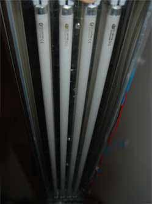
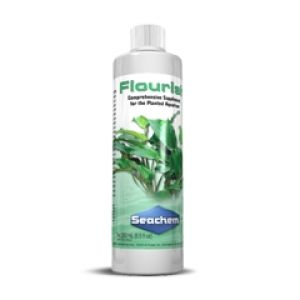
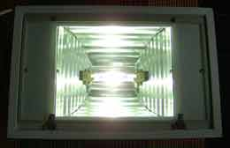

Major Factors
WHAT IS NEEDED FOR A THRIVING PLANTED AQUARIUM?
Planted aquariums are beautiful, living and healthy for your tanks inhabitants. Aquatic
plants are generally easy to care for in the aquarium. Outlined below are a number of important considerations when housing
plants, especially if the aquarium will become more densely populated. Lighting, nutrients and carbon dioxide are needed for
plants in the garden and in the aquarium. Aquatic plants when given the right environment will thrive and can be propagated to
create dense, beautiful layouts.

Lighting

- Lighting is an important factor when it comes to growing and keeping plants.
In nature sunlight is responsible for plant growth. In the aquarium we must replicate this with a bright fixture to keep
the plants healthy. Java ferns, moss and basic stem plants you can find in your LFS are an excellent starting plant.
- Due to their natural location being in shadier areas, a good rule of thumb is you will need around 1-2 watts per gallon of
lighting. For example if your tank is 50 gallons, you would want between 50-100w of
light from a Metal Halide or T5 fitting.
- LED fittings have become more popular and more efficient than older styles
of lighting. You can read more about lighting in this article here
choosing the correct light.

Fertilizers | Nutrients
- Just like aquarium fish, aquatic plants require trace elements and vitamins that don't exist in the tank. This is because
the aquarium is a closed system. In nature streams and lakes are replenished with rainwater dense in organic matter and
runoff. Unfortunately in the aquarium trace elements will only exist from initial setup or if they are added by the
aquarist.
- There are two ways of supplying plants within the aquarium with correct elements and fertilization.
The first is a nutrient rich substrate or gravel. Seachem fluorite, Dupla, ADA and other commercial brands sell these
in 20L bags at most local fish stores. To read more about choosing a substrate continue on to this article
choosing the correct substrate

- The second way of giving your plants trace elements is liquid additives. These literally add iron, magnesium, potassium and
other macro/micro elements your plant need into the aquarium water. It is useful to read up on these here
choosing a fertilizer. Many aquarists use both these methods to ensure their plants are growing
fast and healthy.
- Plants like java fern and anubais which feed directly from the water column and liquid fertilizers
aid in their growth. Fertilizers are the crux of your plants health. Growing plants without fertilizers is possible and has
been done. However the plant will slowly starve from a lack of nutrients and will grow thin and translucent.

CO2
- Carbon dioxide is the third major factor that affects growth rate and health of plants in the aquarium. Carbon dioxide
is utilized by plants on land through the air. Aquatic plants however absorb carbon dioxide through the water column.
Professional aquarists use large CO2 canisters, hollow tubing and glass diffusers to dissolve carbon dioxide into the
aquarium where plants are able to access it. CO2 cannisters work very well but can be an expensive investment,
especially for the beginner aquarist.
- A more affordable option is to use DIY CO2 avoiding the cost of
expensive equipment. In this manner yeast simply reacts with sugar in a large plastic bottle. This natural chemical
reaction will release CO2 into the aquarium.
- CO2 dosing done correctly will increase the plant growth rate
dramatically. Doing it yourself can prove to be a very cheap solution. Other options include buying a product
such as seachem flourish excel that provide a liquid form of carbon that can be absorbed by the plants.
- CO2 is a serious commitment for an aquarium but will yield significant positive results. Some aquarists
prefer to keep the aquarium simple and use low light plants for a more affordable and low maitenance
solution. You can begin with a low-light planted aquarium and further along add CO2 when you are ready.
Dosing carbon dioxide will prove to increase the health and vitality of your aquatic plants.
Brief Tips
- Following the above your aquarium will have 3 variables to play with. These are lighting, nutrients and carbon
dioxide. Ensuring these are in equilibrium with each other is important for the aquarium health. If there is excess
of one it can lead to unwanted algae. Each tank is unique, change dosage amounts and light brightness to find the
correct limits of your aquarium.
- When dosing both seachem excel and flourish (or other liquid fertilizer
products with similar purpose) it is not essential to dose what is required on the label. Each tank is unique and
especially lower-tech or low-light setups will not require large amounts of fertilizers.

- If you choose the method of DIY CO2 be sure to calculate how much CO2 bubbling into the aquarium you will need based on volume
and planting density. This will govern the size and number of bottles you will need.
- Keep the lights switched on for a
maximum of 8-10 hours a day. Ensure the tank avoids all direct natural sunlight as this can cause complications with excess
algae growth. Never leave the aquarium light on 24 hours a day. This will not let your fish rest naturally or let the aquarium
plants respire.